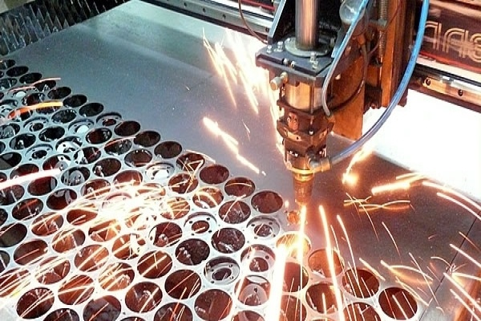
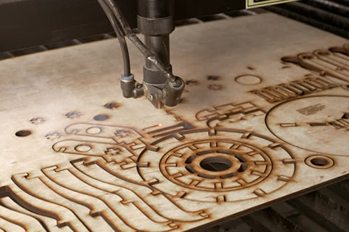
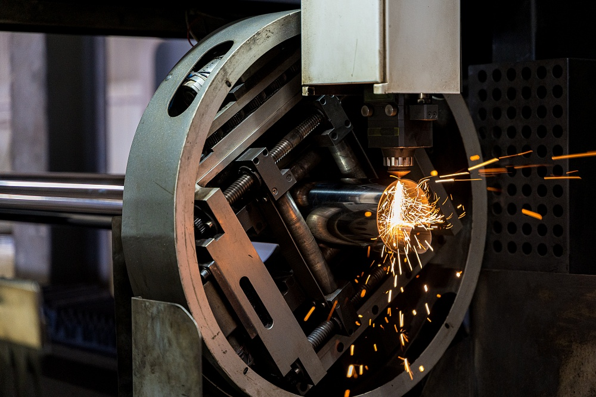

Лазерная резка металла

Лазерная резка листового металла — это высокоточный метод раскроя, при котором материал плавится и испаряется под воздействием сфокусированного луча. Наша технология позволяет работать с черными и цветными металлами, деревом и полимерами любой плотности. Изготовленные детали полностью соответствуют инженерным чертежам. Мы выполняем заказы на производство комплектующих для машиностроения, заключаем договоры с производственными и торговыми компаниями, предоставляя полный пакет закрывающих документов.
Особенности технологии
Луч воздействует на материал строго по заданной траектории. За фокусировку отвечает специальная оптическая линза, которая сужает диаметр луча до 0,2 мм. Благодаря такой концентрации энергии мы можем выполнять как прямые, так и сложные фигурные резы с ювелирной точностью, что недоступно при использовании механических режущих инструментов.
Почему заказывают у нас
- Бесконтактная обработка: структура и кромки листа не деформируются;
- Масштабируемость: оборудование справляется как с единичными образцами, так и с крупными серийными партиями;
- Гибкие настройки: программное обеспечение позволяет подобрать идеальный режим под каждый тип материала;
- Минимум брака: высокая точность позиционирования головки гарантирует чистоту реза;
- Удобная логистика: доставляем готовые детали по указанному адресу, кромки не требуют дополнительной зачистки;
- Лояльность: специальные условия и скидки для постоянных заказчиков.
Мы регулярно модернизируем производственную базу, внедряем автоматизацию и обновляем ПО, что позволяет нам держать конкурентные цены. Если вам нужна качественная лазерная резка в Екатеринбурге, оставьте заявку на сайте «Промдеталь» или звоните: +7 (343) 216-98-30, +7 (343) 216-98-31.
Резка неметаллов по размерам заказчика

Мы выполняем высокоточный раскрой неметаллических листовых материалов. Процесс полностью автоматизирован, что исключает человеческий фактор и гарантирует аккуратность краев изделия.
Основные материалы и ограничения по толщине:
- Паронит: до 4 мм;
- Фанера: до 16 мм.
Оборудование: швейцарский лазерный комплекс Bystronic Bystar3015. Максимальный формат обрабатываемого листа — 3000×1500 мм. Мы можем предоставить свой материал (при условии рационального раскроя стандартных листов без крупных остатков) или работать с вашим сырьем. Это особенно выгодно, если для задачи требуется лишь часть листа.
Работаем как по вашим, так и по нашим чертежам. Форматы файлов для заказа: AutoCAD (.dwg) или CorelDRAW (.cdr). Присылайте макеты на почту: info@promdetal-ek.ru
Лазерная резка и перфорация труб

Для обработки трубного проката мы используем возможности станка Bystronic Bystar3015, оснащенного специальным вращателем.
- Диаметр от Ø15 до Ø130 мм: подача осуществляется вращателем. Максимальная длина заготовки — 6000 мм. Из-за конструктивных особенностей оборудования существует «мертвая зона» (минимум 260 мм от края), где перфорация невозможна.
- Диаметр свыше Ø130 до Ø220 мм: загрузка производится напрямую в рабочую зону. Максимальная длина заготовки в этом случае — 3000 мм.
Максимальный размер готовой детали не может превышать 2500 мм. Остальные технологические параметры аналогичны резке плоского листа.
Обратите внимание: трубы КВАДРАТНОГО и прямоугольного сечения мы НЕ режем.
Заказы на обработку круглых труб принимаем в форматах .dwg и .cdr на e-mail: info@promdetal-ek.ru
Лазерная гравировка и маркировка

Нанесение изображений, логотипов и текста на металлические детали — это неотъемлемая часть нашего производственного цикла.
Принцип действия основан на создании лазерным лучом микроскопических лунок, которые сливаются в четкие линии рисунка или надписи. Такое изображение получается неглубоким, поэтому оно наиболее контрастно и читаемо на светлых, гладких поверхностях.
Важно: мы выполняем гравировку только в рамках производственного процесса (например, на только что вырезанных деталях). Гравировку сторонних готовых изделий (брелоков, зажигалок, часов, сувениров) мы не производим.
Чаще всего эту услугу применяют для заводской МАРКИРОВКИ крупных партий однотипных или малоразличимых деталей, чтобы исключить ошибки при сборке.
Телефоны для связи и консультации: +7 (343) 216-98-30, +7 (343) 216-98-31.